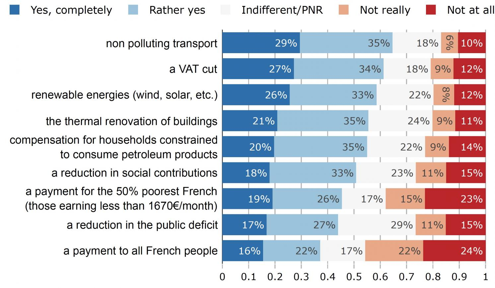
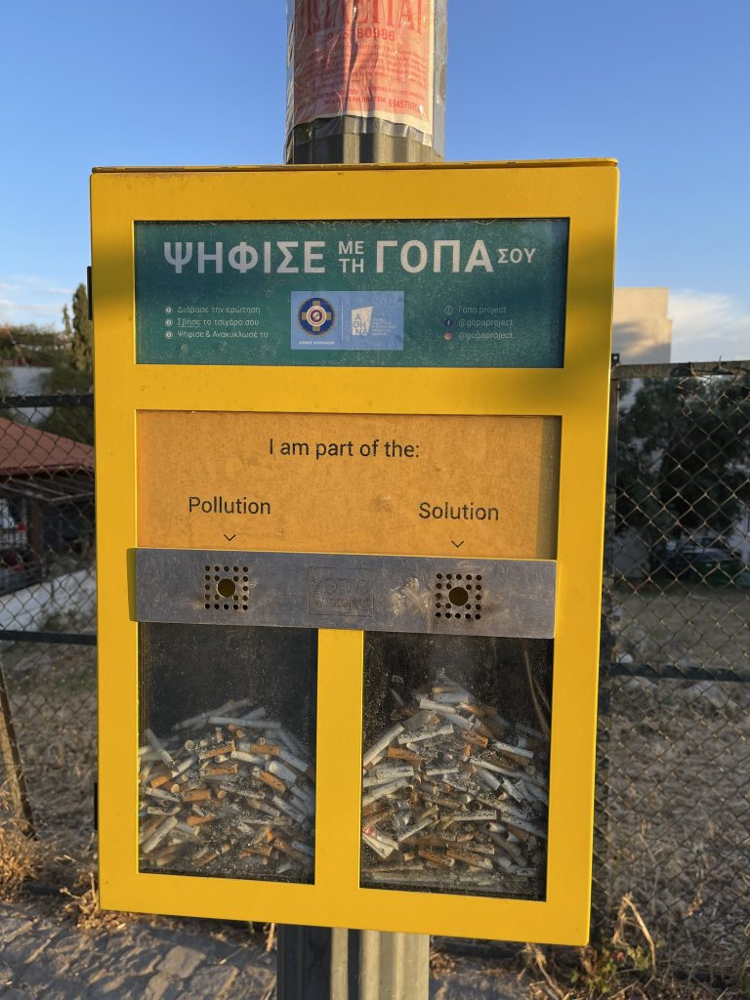
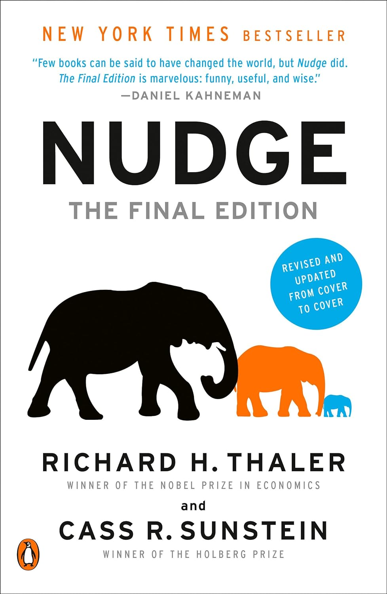
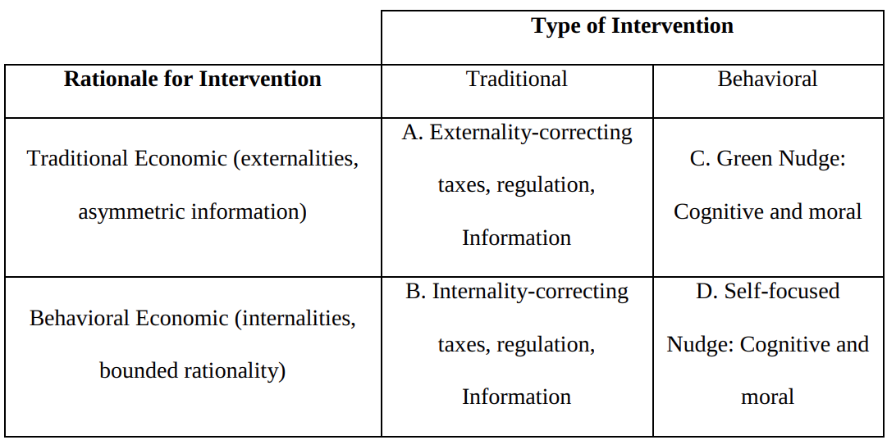
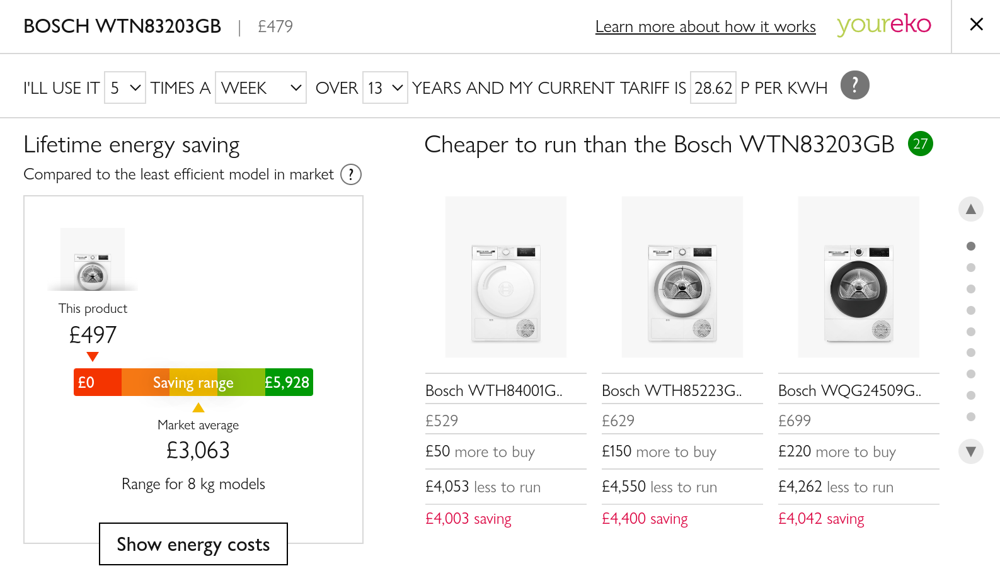
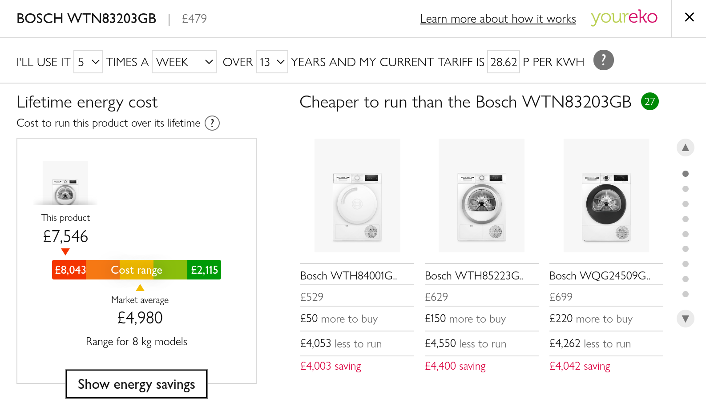
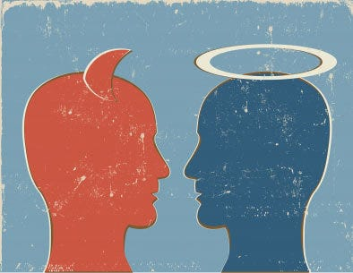
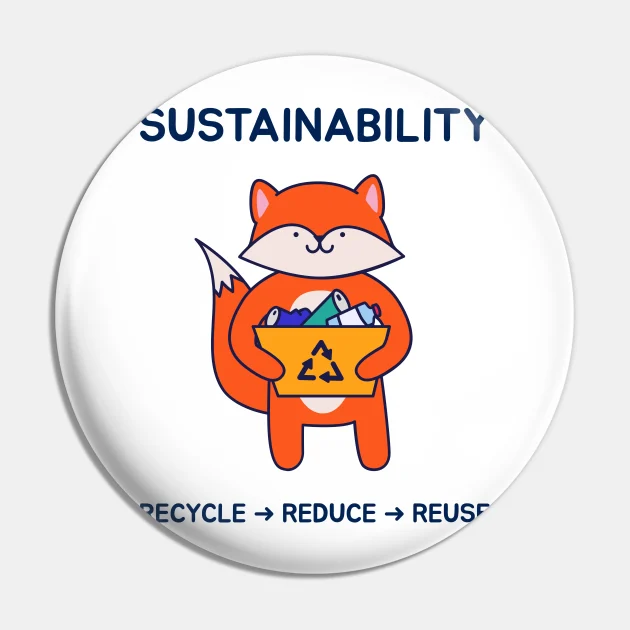
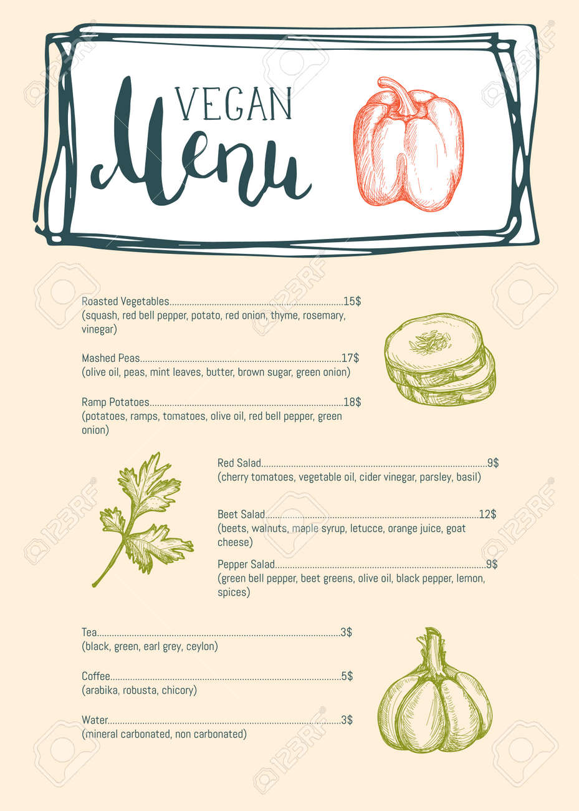
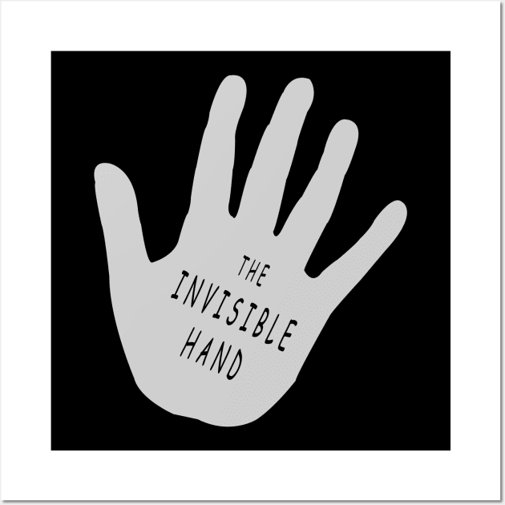

Green Nudges
Topics in Economics, ESCP, 2023-2024
2024-02-26
Introduction
Reminder
Economic consensus: agents respond to incentives
Two versions:
Fully Rational / Limited Rationality / Rational Inattention
Behavioural World: systematic deviations from rationality
Carbon Tax
For rational agents:
- modify the system to provide the right incentives
- first best: carbon tax
- second best: modify constraints to make carbon de facto more expensive
Should work well for rational agents: especially firms…
People are strange..
Fabre and Douenne(2022): why do french people reject carbon tax?

Why do people reject carbon taxes?
Fabre and Douenne(2022): what would make french people accept a tax and dividend solution?
For behavioural agents
Behavioural agents (with any kind of behavioural bias) also respond to incentives
But their biases can also be affected by other means.

Examples:
Behavioural agents (with any kind of behavioural bias) also respond to incentives
But their biases can also be affected by other means.

Green Nudges
Nudge (economic definition)
A nudge is defined as a change in the decision environment that influcences people’s behavior without prohibiting any choices or significantly changing the economic incentives
from Thaler and Sunstein, 2009
Originally, the role of nudges was to counteract poor choices made by individuals, in areas such as personal savings and health
Traditional Nudge: improve welfare of agents: a behavioral solution to a behavioral problem.
Green nudge: influence people’s behavior, through changes in the choice architecture, in order to reduce negative externalities: a behavioral solution to a traditional economic problem.
Classification
Cognitive nudges
Correct for bounded rationality, inattention of self-control. Make it easier to “do the smart thing”.
For instance, help individuals with self-control problems, present-bias….
Example: put healthy food at the top of a restaurant menu.
It does does not assume that individuals make poor choices for themselves because of bounded rationality. But it works because individuals have cognitive or self control limitations.
Moral Nudges
A moral nudge draws on people’s social preferences, their desire for status, to follow norms or to have a positive self-image. The nudge rewards “doing the right thing” by providing the individual with moral (dis)utility.
Example: bounded rationality or self-control could lead an individual defaulted into a green tariff to stick with the new socially desirable default.
Compare with the neoclassical agent
\[\max_{s.t. h(x)\leq0} U(x)\]
Cognitive Nudge: help agent solve optimization
Moral Nudge: affects agents preferences
Some Examples
| Nudge Type | Example |
|---|---|
| Defaults | If I manage to summarize that in a few words, will that fit? |
| Simplification of information and salience | |
| Changes in physical environment | |
| Reminders | |
| Social comparison | |
| Normative appeal and peer pressure | |
| Commitment and goal Setting |
Defaults
Default Browser
The default effect refers to the tendency of people to stick with an alternative already chosen by someone else, even when the cost of making an active choice is very small.
Default Browser
Why does it work?
- people interpret the default as a suggestion from someone better informed
- lowers the cost of a decision (from no-decision to the default)
- loss aversion or status quo bias make people stay with the default
Result:
- consumption of paper dropped by around 15 percent
- no indications that the effect was any smaller 28 weeks after the change had been introduced
Change the default temperature on thermostat for OECD employees from the standard 20 °C to a lower default.
Result:
- 1-degree decrease resulted in a lower average temperature initially, the effect disappeared and went into the opposite direction after a few weeks.
Simplification of Information and Salience
Decision makers are innatentive to certain informations and make therefore suboptimal decisions.
Example: consumers ignore fuel and electricity costs when buying cars or lightbulbs.
Note that this can correspond to:
- limited rationality: agents lack cognitive power
- rational innatention: since acquiring and processing information is in general costly, it might be rational to ignore some


Label: lifetime energy costs
Is it really a nudge ? Or just release of information?

In Tiefenbeck et al. (2016), real-time feedback on energy use, in the shower, was given in the form of an animation of a polar bear standing on melting ice.
-> reduced the average shower time by 22 percent
Changes in the Physical Environment
The design of the physical can nudge people to the preferable behaviour, or give clues on appropriate conduct.
The topic is under-studied despite some famous examples.
Kallbekken and Saelen (2013): in a buffet restaurant, 50% smaller plates led to a reduction of around 20% of food consumption.
Reminders
A reminder increases attention to a decision and reduces forgetfulness.
Can have unexpected effects:
- draw attention to a decision that the decision maker would rather avoid
- create guilt and/or cognitive dissonance

Reminders of participation in voluntary land conservation programs
-> Increase participation rate
Wallander, Ferraro and Higgins (2017)

After receiving an electricity bill households reduce consumption by 0.6% to 1%.
Gilbert and Zivin (2014)
(A way to reduce peak demand?)

In behavioural economics we posit that social informations (information about others) impact individual’s behaviour.
Social information can be classified between:
- descriptive message: this is what others do
- injunctive message: this is the appropriate behaviour
How are they different?
Consumption Dashboard
At UCLA students don’t pay for energy bills.
How to reduce water and electricity consumption with a cusom dashboard for each room?
Provide feedback to users with:
- realtime individual consumption (private information)
- position w.r.t. mean consumption (descriptive social information)
- public information: Ratings for each room (red/green were made public with large, prominently displayed posters, posted on each floor
Authors found that only a combination of private and public information had an effect on energy use (a 20 percent reduction).
Effect persists after the end of the treatment
Moral pleas / moral suasion
Some social behavior, does not require any direct comparison.
Moral suasion / moral pleas are used to nudge behavior.
Effects seem uncertain and do not last
Send message to consumers: Substantial energy conservation will be required for the society during critical peak-demand hours in summer and winter.
Compare with economic incentives (dynamic pricing)
Outcome:
- electricity use down by 8% for moral suasion, 16% for economic incentives
- for moral suasion, consumption back to normal after end of messages (dishabituation)
- for economic incentives, green behaviour persists for longer
Commitment and Goal Setting
Several strands of behavioural economics postulate the existence of several selves (with different goals/preferences) and discuss some kind of self control.
The time inconsistency between today’s self and tomorrow’s self leads to commitment issues
The inconsistency between one’s self-image and actual behaviour leads to cognitive dissonance.
Northern Illinois goal-setting program, aimed at reducing residential electricity consumption:
- voluntary goal-setting
- provides informaton on how to achieve goal and constant feedback
Results:
- attractive to present-biased consumers
- average savings: 4.4% (8% at the begining)
- higher savings when goal is realistic rather than over-ambitious or very low
Loock, Staake, and Thiesse (2013)
Another field experiment with electricity customers:
- voluntary goal-setting…
- with a default option
Results:
- defaults can raise goals and realized savings…
- … but lead to lower savings if set too far from self-set goals
Hotel guests can commit to act more sustainably in exchange for a pin
Result:
- treated guests more likely to reuse towels
- effect stronger with the pin
- stronger if commitment more specific (reuse towels) than general (act in an environmentally friendly way)


Cognitive dissonance: conflicting objectives decisions by different active selves.
It can counter the effect of many nudges.
Two field studies were conducted at a US academic institution (MIT), where people selected what to eat via event registration forms.
A random group saw “vegan” or “vegetarian” labels in the titles of one of the two items.

Results:
- labels did not increase vegan consumption by vegans/vegetarians…
- … but meat consumption of non-vegans
Interpretation?
Do Nudges Work ?
Results
Nudging as an Environmental Policy Instrument by Carlsson, Gravert, Johansson- Stenman, and Kurz, 2019, reviews many studies:
- Many on electricity usage
- Most (serious) studies are on moral nudges:
- specifically: comparison with a reference group
- Many studies on default nudges
- Results are very context dependent
Same results in Green nudges: Do they work? Are they ethical?
Are green nudges ethical?
What do you think?
Conclusion
Ultimately, well-functioning government and market, are supposed to reflect people preferences.

Traditional economists do not mess up with preferences:
- They solve market failures
But some market failures are just unsolvable (like the tragedy of the horizon)
Should policy makers change people preferences?
💦 Mattauch, Stern1 and Konc (2022) The economics of climate change with endogenous preferences
- net-zero requires a change in values
- social dynamics and endogenous preferences must be part of ecological transition models
Very far from a consensual position. Would you want the CB or the Gvt choose preferences for you?
Preferences are strange objects.
The economics of well-being show that people are very resilient:
- many studies show that self-reported happiness is mean reverting
A new topic in behavioural science: motivated beliefs
- people manipulate their own beliefs
- the truth is inconvenient -> manipulate your truth
Acceptability
So what are the options for the change?
- government?
- market?
- society?
Whether or not government and markets reflect well people’s preferences, for efficient measures to be accepted, preferences need to change.
My two cents
I believe that, individually, people will ultimately adjust their beliefs and preferences to make the ecological transition less painful.
Which will increase social acceptance of government measures and market reforms.
Can nudging be an efficient tool to steer motivated beliefs in the right direction?
❓ Any data?
Social Comparisons and Social Preferences
We have seen that individuals exhibit other-regarding preferences
In econ, there are several associated concepts/theories: